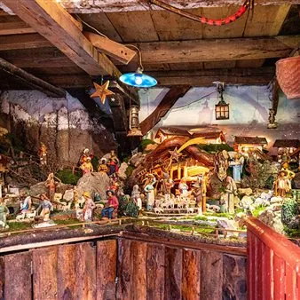

da sab 5 dic a mer 6 gen
La Magia del Natale: Borghi e Presepi e La via del Natale
Nel periodo natalizio Sutrio si trasforma, grazie agli innumerevoli presepi esposti lungo la via principale del paese e tutte le corti storiche, provenienti dalla regione e dalla vicina Austria. Sutrio (ud) via Roma e corti storiche del borgo Ingresso libero e gratuito. Sono…
 Indicazioni
Indicazioni
- Costi e prenotazioni
- Costo non indicato · Prenotazione non indicata
- Programma
- Programma da verificare. Apri la fonte ufficiale per orari e possibili aggiornamenti.
- In caso di maltempo
- Nessuna indicazione specifica pubblicata.
- Note
- Acquisito automaticamente dalla fonte.
L’EVENTO
Descrizione completa
Nel periodo natalizio, il borgo di Sutrio si trasforma in un suggestivo percorso a cielo aperto grazie alla rassegna itinerante di presepi artigianali. Un evento unico che conduce i visitatori alla scoperta delle caratteristiche borgate del paese, tra cortili, loggiati e antiche cantine, dove l'arte presepiale si fonde con l'atmosfera autentica della montagna friulana. Ad arricchire l'esperienza, il mercatino dell'artigianato , laboratori creativi a tema natalizio, spettacoli e attività dedicate ai più piccoli, per vivere insieme tutta la magia delle feste. Tra le opere più affascinanti spicca il Presepe di Teno , straordinaria creazione del maestro artigiano Gaudenzio Straulino , conosciuto da tutti come "Teno". Un capolavoro realizzato nell'arco di trent'anni di lavoro, che testimonia passione, maestria e profondo legame con le tradizioni locali. La rassegna ospita inoltre un'opera di eccezionale valore artistico: le 18 statue del Presepe del Vaticano , scolpite da undici maestri del legno del Friuli Venezia Giulia e protagoniste del Natale 2022 in Piazza San Pietro . Un'occasione imperdibile per ammirare da vicino un'opera che ha rappresentato l'eccellenza dell'artigianato regionale nel cuore del Vaticano. Un appuntamento che unisce cultura, tradizione e spirito natalizio, regalando ai visitatori un'esperienza autentica e ricca di emozioni.
Rassegna lungo le vie centrali di Sutrio e nelle frazioni di Nojaris e Priola
QUANDO
Dal 5 dicembre 2026 al 6 gennaio 2027
Da Sabato 5 a Martedì 8 dicembre 2026
Sabato 12 e Domenica 13 dicembre 2026
Da Sabato 19 a Giovedì 24 dicembre 2026
ore 10.00 - 19.00
Venerdì 25 dicembre 2026 ore 15.00 - 19.00
Da Sabato 26 a Giovedì 31 dicembre 2026
Venerdì 1° gennaio 2027 ore 15.00 - 19.00
Da Sabato 2 a Mercoledì 6 gennaio 2027
VISITE GUIDATE
Si effettuano visite guidate a pagamento (italiano) per singoli e gruppi previa prenotazione ai contatti riportati nelle INFO
Fino a 15 pax: € 30,00 tot
Oltre le 15 pax: € 2,00/pax
Gratuito: capogruppo e accompagnatori
VIABILITÀ
Possibilità di parcheggio per pullman in Viale Europa Unita
Accesso a Via Roma interdetto ai mezzi
FAMILY EXPERIENCE
“La Via del Natale” - Percorso a tappe per grandi e piccini
Dettagli e costi sul sito presepifvg.it
INFO
Pro Loco Sutrio
Tel. 0433 778921 int. 3
prolocosutrio23@gmail.com
www.prolocosutrio.com
Facebook: Pro Loco Sutrio
Instagram: pro_loco_sutrio
IL PROGRAMMA
Programma e orari
Appuntamenti raccolti dalle fonti elencate. Dove manca un orario, non è ancora disponibile in questa scheda.
Programma pubblicato
- ore 10.00 - 19.00
INFORMAZIONI UTILI
Prima di partire
- Controllare la fonte prima di partire.
ORGANIZZAZIONE